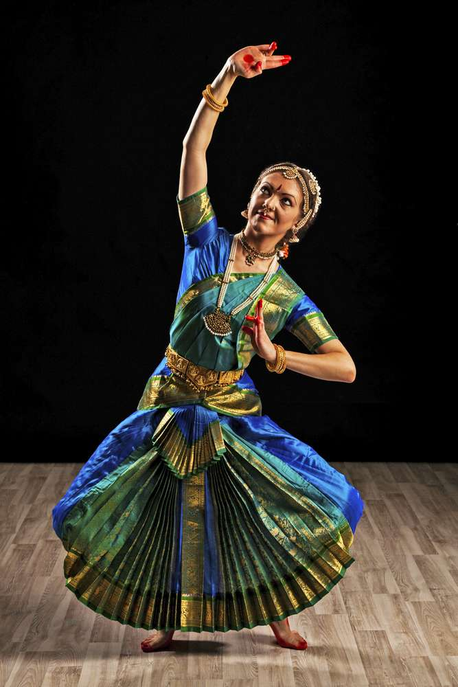
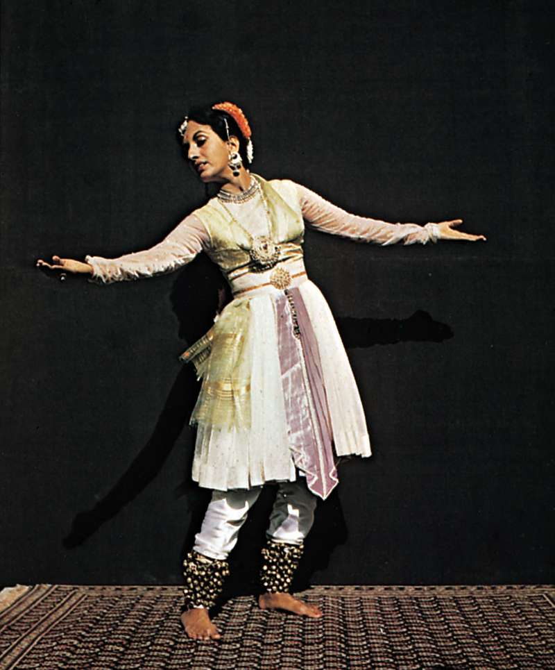
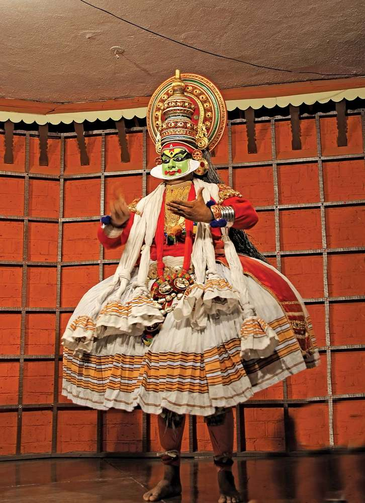
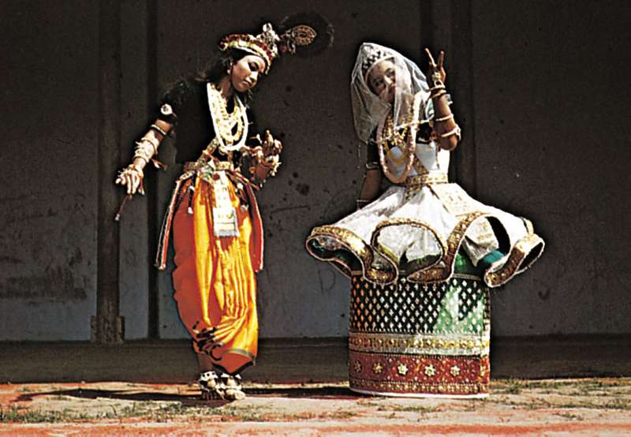
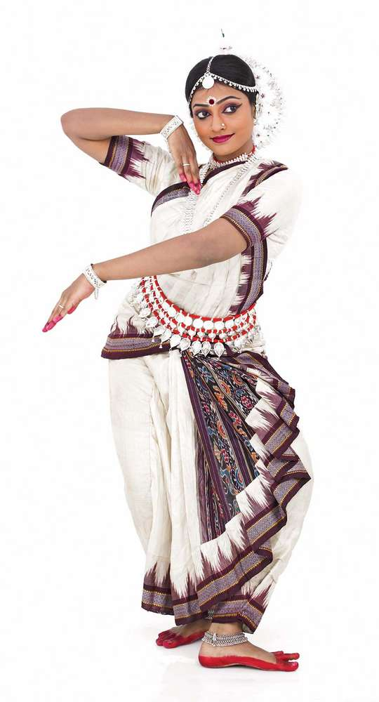

Types
Types of Dances
1.Bharatnatya

Bharatanatyam is a dance of Tamil Nadu in southern India. It traces its origins back to the Natyashastra, an ancient treatise on theatre written by the mythic priest Bharata. Originally a temple dance for women, bharatanatyam often is used to express Hindu religious stories and devotions. It was not commonly seen on the public stage until the 20th century. The dance movements are characterized by bent legs, while feet keep rhythm. Hands may be used in a series of mudras, or symbolic hand gestures, to tell a story.
2.Kathak

A dance of northern India, Kathak is often a dance of love. It is performed by both men and women. The movements include intricate footwork accented by bells worn around the ankles and stylized gestures adapted from normal body language. It was originated by Kathakas, professional storytellers who used a mixture of dance, song, and drama. Like other Indian dances it began as a temple dance, but soon moved into the courts of ruling houses.Native to North India, Kathak is one of the six classical Indian dance forms. Kathak originated within Hindu temples as a storytelling device for portraying the epic tales contained within the Hindu scriptures, Mahabharata and Ramayana. Poetry was combined with rhythmic movement to aid in the worshipful storytelling.
3.Kathakali

Kathakali comes from southwestern India, around the state of Kerala. Like bharatanatyam, kathakali is a religious dance. It draws inspiration from the Ramayana and stories from Shaiva traditions. Kathakali is traditionally performed by boys and men, even for female roles. The costumes and makeup are especially elaborate, with faces made to look like painted masks and enormous headdresses.
4.Manipuri

Manipuri comes from Manipur in northeastern India. It has its roots in that state’s folk traditions and rituals, and often depicts scenes from the life of the god Krishna. Unlike some of the other, more rhythmic dances, Manipuri is characterized by smooth and graceful movements. Female roles are especially fluid in the arms and hands, while male roles tend to have more forceful movements. The dance may be accompanied by narrative chanting and choral singing.
5.Odissi

Odissi is indigenous to Orissa in eastern India. It is predominantly a dance for women, with postures that replicate those found in temple sculptures. Based on archaeological findings, odissi is belived to be the oldest of the surviving Indian classical dances. Odissi is a very complex and expressive dance, with over fifty mudras (symbolic hand gestures) commonly used.It is indigenous to Orissa, eastern India, and follows the principles of the Natya-shastra. Its close replication of poses found on classical temple sculptures suggests great antiquity. Related to bharata natyam in its basic pattern, odissi emphasizes sinuous postures and is enlivened by a variety of elevations and jumps. It is predominantly a dance for women.